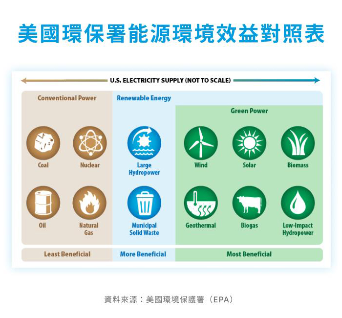
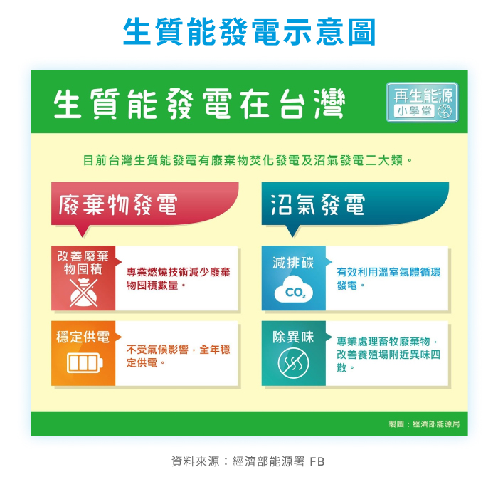
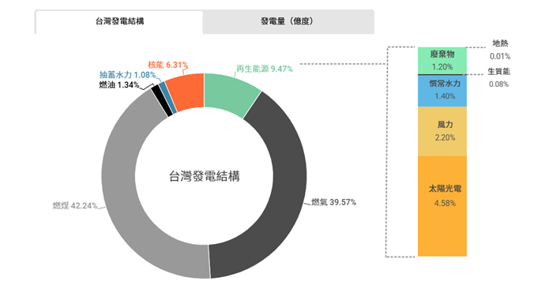
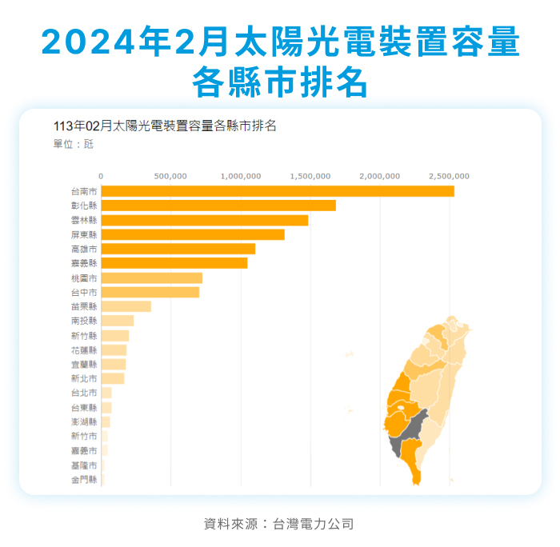

根據國際能源總署（IEA）資料顯示，全球超過七成的碳排放來自能源燃燒，其中電力部門——特別是燃煤與天然氣發電——占據了極大比重。因此，轉換電力來源，從依賴化石燃料轉向再生能源（如太陽能、風力、水力等），被視為當前最迅速且有效的減碳策略。
綠電能源有哪些？
美國環境保護署（EPA）依據各能源的相對環境效益來定義綠能，從下圖可以看到，被認為是綠能（Green Power）的能源有六種：風能、太陽能、地熱能、生質能、沼氣、低度水力發電。
|  |
風能
風的產生源於大氣壓力的差異，當地球表面受到太陽不均勻照射時，不同區域吸收的熱能各異，導致氣壓變化，進而促使空氣流動，形成風。地球表面由陸地、河流與海洋組成，吸收太陽輻射後將能量轉化為熱能，是造成氣壓差異的根本原因。換句話說，只要有陽光，就會有風的產生。
「風能」則是指將風的動能轉化為電能的技術，通常是透過架設大型風力機組（類似巨大的電風扇）來實現。當空氣流動推動風機葉片旋轉時，進一步帶動發電機運轉，產生電力。風力發電機主要由葉片、支撐塔與齒輪箱等部件組成，將風的動能轉為機械能，再轉為電能。
風力發電可分為兩種類型：設置於陸地上的稱為「陸域風電」，若機組建於低潮線以外的海域，則稱為「離岸風電」。離岸風場風速穩定，具備更高的發電潛力，是近年發展再生能源的重要趨勢之一。
太陽能
太陽光是地球上最豐沛的能量來源，而「太陽能」即是透過吸收太陽輻射來產生能量。目前常見的太陽能發電方式，主要分為光伏發電與太陽熱能發電。光伏技術透過在日照充足處設置太陽能板，將光能直接轉換為電能；當陽光照射在太陽能電池板上時，電池內部即產生電流，進而供應所需電力。
台灣位處亞熱帶地區，日照資源充足，具備發展太陽能的先天優勢。現階段，台灣太陽能技術已趨成熟，應用領域廣泛，包括建築供暖、熱水製造、照明系統與工業高溫熱源等多元場域。
為提升太陽光電的推廣成效，台灣除積極發展「屋頂型光電」外，也同步推動「地面型光電」，活化閒置與不利耕作土地，提高土地使用效率。同時，政府亦推行「農電共生」、「漁電共生」模式，以達到能源發展與產業共利的目標。例如在漁電共生的應用中，光電業者協助養殖戶加強堤岸防護、建置水質監控系統，不僅改善養殖環境、提高收益，也助力再生能源政策的落實。
生質能
「生質能」是指透過農林廢棄物、沼氣及有機垃圾等資源，經處理後產生的再生能源。常見的定置型生質能發電，燃料來源包括農林廢棄物、都市有機垃圾與沼氣等。在台灣，定置型生質能以「都市有機垃圾（廢棄物發電）」及「沼氣發電」為主，兼具減廢與發電效益，有助推動資源循環與能源轉型。
|  |
水力發電
利用河川、湖泊等位高處的水流至低處，將其位能轉換成水輪機的機械能，帶動發電機產生電能。小水力發電（低度水力發電）是透過灌溉水渠等水流渠道與現有水利設施，引水推水輪機葉片，葉片旋轉帶動發電機，進而產生電力。
 |
| 資料來源：台電公司 |
台灣綠能產業發展現況！
自2016年啟動能源轉型以來，台灣持續開發各類再生能源，積極邁向綠能國家。然而，根據經濟部2023年能源供給報告，台灣仍高度依賴進口能源，生質能、太陽能與風能等綠能僅占總供應量的9.47%。儘管與目標仍有差距，台灣已逐步擴展綠能布局，積極投入地熱、風電等多元發電方式。
| 2023年台灣發電結構與發電量 |
|  |
| 資料來源：經濟部能源署 |
地熱：24處地熱案場陸續運轉及開發
根據經濟部資料，目前全台已有24處地熱案場陸續開發與運轉中，分布於大屯山、宜蘭清水與仁澤、花蓮瑞穗、臺東紅葉、知本及金崙等地。地熱發電規劃總裝置容量約為61.75MW，並設定 2050年達成6GW的長期目標（2025年20MW、2030年200MW、2040年2GW），逐步擴大綠能比重。
離岸風電：2023年2.43GW設置量目標達成
太陽能：2024達14.281 GW創新高
截至2024年底，台灣太陽光電裝置容量達14.281GW，全年發電量約為149億度，為再生能源中貢獻最多者。儘管與2025年20GW的目標仍有差距，政府將持續推動相關政策，期望加快進度，實現能源轉型。
根據台電的「2024年2月太陽光電裝置容量各縣市排名」，台南因為日照豐沛、腹地廣大，光電發展高居全台第一！而台電2020年也在台南將軍、七股區利用214公頃廢棄鹽灘地，以48萬片光電板打造裝置容量150MW（百萬瓦）的「南鹽光」，創下當時國內最大紀錄！另外，也在2023年在同點建置「光儲合一」的儲能系統，讓綠能效益極大化。據估算，南鹽光平均每年可發出2億度電，相當於近5萬戶家庭一年用電，也發揮「每年超過10萬公噸減碳」效益，且仍保有場址既有的滯洪功能。
|  |
由此可知，綠電已是銳不可擋的趨勢潮流。經濟部指出，2016年時，可交易的綠電一年僅約60億度，但根據統計預測，2025年時產業對綠電的年度需求將超過200億度。因此，確實非常需要經濟部、地方政府，以及相關的公私部門全力合作推動綠電。仁寶也積極推動綠電採購政策，致力於實現2050年100%使用再生能源的目標。2024年，仁寶正式加入全球再生能源倡議「RE100」，承諾至2050年全面使用再生能源，並設定2030年達到60%的再生能源使用比例。為達成此目標，仁寶透過購買綠電、設置自主再生能源設備及綠電憑證等多元方式，並建置「永續雲」數位平台以強化碳排與綠電數據管理。此外，仁寶已通過SBTi科學基礎減碳目標審查，分階段推動碳排減量，展現其邁向淨零排放的決心與行動力。